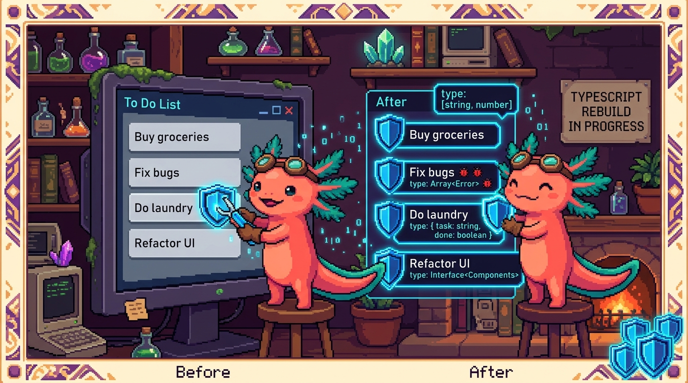

Capítulo 14 — Mini-proyecto: una lista de tareas tipada

¡Hola otra vez! Soy Bit, tu ajolote programador. 🐾 ¿Te acuerdas de la lista de tareas que construiste en el Módulo 03 con JavaScript puro? Aquella libretita digital donde escribías "Comprar pan", la marcabas como hecha y la borrabas. Hoy vamos a hacer algo precioso: la vamos a reescribir con TypeScript. No para empezar de cero, sino para ponerle "etiquetas de seguridad" a cada pieza. Vas a ver con tus propios ojos el momento exacto en que TypeScript te salva de un error antes de ejecutar el programa. Y al final vamos a poner las dos versiones lado a lado —la de JavaScript sin tipos y la nueva con tipos— para que sientas en carne propia qué aportan los tipos. Recuerda el lema de todo el módulo: TypeScript es JavaScript con tipos. Todo lo que ya sabes sigue valiendo; solo le sumamos avisos. Respira. Esto lo vas a disfrutar.
1. ¿Qué vamos a construir (otra vez)?
La misma lista de tareas de siempre: una caja para escribir, un botón para añadir, una lista donde aparecen las tareas, clic para marcarlas como hechas y un botón para borrarlas. El comportamiento no cambia. Lo que cambia es que ahora cada dato va a tener un tipo que le dice a TypeScript (y a tu editor) qué forma tiene.
La pregunta honesta que quizá tengas es: "Si la versión de JavaScript ya funcionaba, ¿para qué complicarme?". La respuesta corta: para que el editor te avise de los errores mientras escribes, en vez de que se rompa cuando un usuario lo usa. La respuesta larga es todo este capítulo.
🟦 ¿Qué significa? — TypeScript
TypeScript es JavaScript con tipos: el mismo lenguaje que ya conoces, más una capa que te deja decir de qué tipo es cada dato (texto, número, verdadero/falso, objeto con tal forma...). Sirve para que tu editor te avise de errores antes de ejecutar el programa. Donde se usa de verdad: RachaSimple (app de hábitos en React + TypeScript) y Faro/Organizer (Next.js + React + TypeScript) están escritas enteras en TypeScript; cada archivo termina en
.tso.tsx.🟦 ¿Qué significa? — tipo
Un tipo es una etiqueta que describe qué forma tiene un dato: si es texto (
string), número (number), verdadero/falso (boolean), una lista, un objeto con ciertas propiedades... Sirve para que TypeScript sepa qué puedes hacer con cada dato y te frene si te equivocas. En Faro, el archivosrc/lib/types.tsestá dedicado por completo a definir los tipos del proyecto.💡 Tip
No tienes que tirar la versión de JavaScript del Módulo 03. Lo ideal es tener las dos carpetas abiertas y comparar. Verás que el 90% del código es idéntico. TypeScript no es un lenguaje nuevo que aprender de cero: es tu JavaScript de siempre con anotaciones.
2. Preparamos el proyecto
En el Módulo 03 abrías el index.html con doble clic y listo. Con TypeScript hay un paso extra: el navegador no entiende TypeScript directamente, así que hay que traducirlo a JavaScript primero. A ese paso se le llama compilar.
🟦 ¿Qué significa? — compilar
Compilar es traducir tu código de TypeScript (
.ts) a JavaScript normal (.js) que el navegador sí entiende. Durante esa traducción, TypeScript revisa los tipos y te avisa si algo no cuadra. Sirve para tener dos beneficios: avisos de errores + un archivo que cualquier navegador puede ejecutar. En RachaSimple y Faro, esa traducción la hace la herramienta de construcción (Vite en uno, Next.js en el otro) cada vez que corresnpm run build.
Para este mini-proyecto vamos a usar la forma más sencilla posible. Crea una carpeta lista-tareas-ts y dentro un archivo app.ts. Si quieres compilar a mano, instala TypeScript una vez con npm install -g typescript y luego, dentro de la carpeta, ejecuta:
// En la terminal (no es código TypeScript, es un comando):
// tsc app.ts
// Eso genera app.js, que es el que carga tu index.html con <script src="app.js">
💡 Tip
Si esto te suena a mucho lío, tranquilo: en proyectos reales nunca compilas a mano; las herramientas (Vite, Next.js) lo hacen solas mientras programas. Aquí lo hacemos manual una vez para ver la "cocina" por dentro. Lo importante de este capítulo son los tipos, no la compilación.
El index.html y el estilos.css son exactamente los mismos del Módulo 03. Lo único que cambia es que el <script> apunta a app.js (el archivo traducido, no a app.ts).
3. El corazón del capítulo: el type Tarea
Aquí está la gran diferencia. En JavaScript, una tarea era simplemente:
// Versión JavaScript del Módulo 03: un objeto suelto, sin describir su forma
const tarea = { texto: "Comprar pan", hecha: false };
Funcionaba, pero JavaScript no sabía nada sobre esa tarea. Si por error escribías tarea.echa (sin la "h") o le ponías tarea.hecha = "sí" (un texto donde debía ir verdadero/falso), nadie te avisaba. El programa fallaba después, cuando ya era tarde.
En TypeScript, primero describimos la forma de una tarea con un type:
type Tarea = {
texto: string;
hecha: boolean;
};
Léelo en voz alta: "una Tarea es un objeto que tiene un texto que es un string y un hecha que es un boolean". Ya está. Acabas de crear un molde.
🟦 ¿Qué significa? — type (alias de tipo)
Un
typees un molde con nombre que describe la forma exacta de un dato. Aquí,Tareadice "un objeto contexto(texto) yhecha(verdadero/falso)". Sirve para reutilizar esa forma en todo tu programa sin repetirla. En RachaSimple, el archivosrc/types/database.tsusatypepara muchas cosas, por ejemplotype UserPlan = 'free' | 'pro'(un usuario es gratis o pro, nada más).🟦 ¿Qué significa? — string
stringes el tipo de los textos: palabras, frases, cualquier cosa entre comillas. Eltextode una tarea es unstringporque es lo que el usuario escribe. Sirve para que TypeScript sepa que ahí va texto y te deje usar funciones de texto como.trim(). En Faro, ensrc/lib/types.ts, elnamede un proyecto es unstring.🟦 ¿Qué significa? — boolean
booleanes el tipo de los valores verdadero/falso (trueofalse), nada más. Elhechade una tarea es unboolean: o está hecha (true) o no (false). Sirve para representar interruptores: encendido/apagado, sí/no. En Faro, cada paso del roadmap tienedone: boolean(hecho o no hecho).🔎 En tu codigo
Fíjate que en RachaSimple y Faro hay un archivo dedicado solo a tipos (
types/database.tsylib/types.ts). No es casualidad: definir las formas de tus datos en un solo sitio y reutilizarlas es una de las costumbres más sanas de TypeScript. Tutype Tareaes la versión de juguete de esos archivos.💡 Tip — ¿
typeointerface?En el Capítulo 03 viste que también existe
interface, que hace casi lo mismo para describir objetos. RachaSimple y Faro usaninterfacepara sus objetos grandes (interface Habit,interface Project) ytypepara las uniones de opciones. Para nuestra tarea,type Tarea = { ... }ointerface Tarea { ... }darían igual. Elige uno y sé consistente.
4. Un estado tipado: el array de tareas
En JavaScript tenías esto para guardar todas las tareas:
// JavaScript: un array, pero ¿un array de qué? Nadie lo sabe.
let tareas = [];
El problema: ese [] está vacío y JavaScript no tiene idea de qué meterás dentro. Podrías meter tareas, números, texto suelto, lo que sea, y nadie protestaría. En TypeScript le decimos qué contiene el array:
let tareas: Tarea[] = [];
Eso : Tarea[] significa "un array de Tarea". Ahora TypeScript sabe que dentro solo van tareas con su texto y su hecha. Si intentas hacer tareas.push(42), el editor se pone rojo de inmediato.
🟦 ¿Qué significa? — anotación de tipo (
: Tipo)Una anotación de tipo son los dos puntos seguidos de un tipo que le pones a una variable para decir qué guarda:
tareas: Tarea[]. Sirve para que TypeScript revise que solo metas ahí lo que corresponde. En Faro, verás anotaciones por todas partes, comoroadmap: RoadmapStep[](una lista de pasos del roadmap).🟦 ¿Qué significa? — array tipado (
Tipo[])Un array tipado es una lista donde todos los elementos son del mismo tipo. Se escribe poniendo
[]después del tipo:Tarea[]es "lista de tareas",string[]es "lista de textos". Sirve para garantizar que tu lista no se llene de cosas mezcladas. En Faro, un proyecto tienetags: string[](una lista de etiquetas de texto).🟦 ¿Qué significa? — estado
El estado son los datos que tu programa recuerda mientras funciona. Aquí, el array
tareases el estado: lo que el usuario ha ido añadiendo. Sirve como la "fuente de la verdad" del programa. En RachaSimple, el estado (la lista de hábitos) se maneja con TanStack Query, que también está tipado.🔎 En tu codigo
Esa idea de "fuente de la verdad" que aprendiste en el Módulo 03 sigue intacta: el array
tareasmanda, la pantalla se redibuja desde él. TypeScript no cambia esa filosofía. Solo le pone un guardia en la puerta del array que dice: "aquí solo entran objetos con forma deTarea".
5. Tipar las funciones: añadir una tarea
Ahora la función de añadir. Compara las dos versiones con calma.
Versión JavaScript (Módulo 03):
function anadirTarea() {
const texto = entrada.value.trim();
if (texto === "") return;
const tarea = { texto: texto, hecha: false };
tareas.push(tarea);
entrada.value = "";
pintarLista();
guardar();
}
Versión TypeScript:
function anadirTarea(): void {
const texto = entrada.value.trim();
if (texto === "") return;
const tarea: Tarea = { texto, hecha: false };
tareas.push(tarea);
entrada.value = "";
pintarLista();
guardar();
}
Casi idénticas, ¿verdad? Dos diferencias diminutas pero poderosas:
function anadirTarea(): void— ese: voiddice "esta función no devuelve nada".const tarea: Tarea = { texto, hecha: false }— anotamos quetareadebe tener forma deTarea. Si te equivocaras y escribieras{ texto, echa: false }(sin la "h"), TypeScript te marcaría el error al instante, subrayando la línea.
🟦 ¿Qué significa? — tipo de retorno
El tipo de retorno es lo que una función devuelve, escrito tras los paréntesis:
anadirTarea(): void. Sirve para que TypeScript revise que la función devuelve lo que prometiste. En RachaSimple, el repositorio de hábitos tiene funciones comolistAll(): Promise<Habit[]>(devuelve, en el futuro, una lista de hábitos).🟦 ¿Qué significa? — void
voides el tipo de retorno de las funciones que no devuelven ningún valor, solo "hacen cosas" (pintar, guardar, limpiar). NuestraanadirTareano devuelve nada útil, solo modifica la lista y la pantalla, así que su retorno esvoid. Sirve para dejar claro que no esperes un valor de vuelta.💡 Tip — el atajo del nombre repetido
En la versión TypeScript escribí
{ texto, hecha: false }en lugar de{ texto: texto, hecha: false }. Cuando la propiedad y la variable se llaman igual, JavaScript (y por tanto TypeScript) te deja escribirlo una sola vez. Es JavaScript moderno, no algo exclusivo de TypeScript, pero verás esta forma corta por todos lados en RachaSimple y Faro.
6. Tipar la función de pintar y el peligroso null
Aquí llega el momento más jugoso del capítulo. En el Módulo 03 buscabas los elementos del HTML así:
// JavaScript: confías en que el elemento existe... y rezas.
const entrada = document.getElementById("entrada");
const lista = document.getElementById("lista");
El problema escondido: document.getElementById puede no encontrar el elemento (si te equivocas en el id, o si el HTML aún no cargó). En ese caso devuelve null, que significa "aquí no hay nada". En JavaScript esto explotaba en tiempo de ejecución con el temido error "Cannot read properties of null". En TypeScript, el editor te obliga a tener en cuenta esa posibilidad.
🟦 ¿Qué significa? — null
nulles un valor especial que significa "aquí no hay nada" a propósito.document.getElementByIddevuelvenullcuando no encuentra el elemento. Sirve para representar la ausencia de un valor. En Faro, muchos campos pueden sernull: por ejemplodescription: string | null(un proyecto puede tener descripción... o no tener todavía).🟦 ¿Qué significa? — unión con null (
Tipo | null)
string | nullsignifica "esto es un texto o está vacío (null)". Esa barrita|se lee "o". Es la forma de TypeScript de decir "ojo, este valor podría no existir, tenlo en cuenta". Sirve para que no se te olvide manejar el caso "no hay nada". En Faro,next_action: string | nulles justo esto: o hay una próxima acción, o no la hay.
Cuando escribes en TypeScript:
const entrada = document.getElementById("entrada");
TypeScript sabe que entrada es del tipo HTMLElement | null. Y en cuanto intentes hacer entrada.value, te subrayará: "entrada es posiblemente null". ¡Te está protegiendo! La forma segura de manejarlo es comprobar primero:
const entrada = document.getElementById("entrada") as HTMLInputElement | null;
const lista = document.getElementById("lista");
if (!entrada || !lista) {
throw new Error("Falta un elemento del HTML. Revisa los id.");
}
// A partir de aquí, TypeScript ya sabe que entrada y lista existen de verdad.
Después de ese if, TypeScript hace algo mágico llamado estrechamiento: como ya descartamos el null, a partir de esa línea trata a entrada y lista como elementos que sí existen. Ya no te molesta más con avisos.
🟦 ¿Qué significa? — manejo seguro de null
Manejar
nullcon seguridad es comprobar si un valor existe antes de usarlo, en vez de dar por hecho que está. Aquí, elif (!entrada || !lista)corta el programa con un error claro si falta algo. Sirve para evitar que la app explote a mitad de camino. En RachaSimple, el repositorio devuelveHabit | nully el código que lo usa siempre comprueba antes de tocar el dato.🟦 ¿Qué significa? — estrechamiento (narrowing)
Estrechar es cuando TypeScript, gracias a un
if, descarta posibilidades y afina el tipo. Antes delif,entradaera "elemento o null"; después, TypeScript sabe que es "elemento" a secas. Sirve para que, tras comprobar, puedas usar el valor sin más avisos. Lo viste a fondo en el Capítulo 06.🟦 ¿Qué significa? — aserción de tipo (
as)
as HTMLInputElementes decirle a TypeScript "confía en mí, esto es un campo de texto". Lo usamos porquegetElementByIddevuelve un elemento genérico, pero nosotros sabemos queentradaes un<input>con.value. Sirve para precisar el tipo cuando tú sabes algo que TypeScript no puede deducir solo. En RachaSimple, el repositorio usaas Habit[]para afinar lo que llega de Supabase.⚠️ Cuidado
El
ases una promesa tuya: le dices a TypeScript "confía en mí". Si te equivocas y eso no era un<input>, TypeScript ya no te protege y el error vuelve en tiempo de ejecución. Úsalo solo cuando de verdad sepas la forma del dato. No es una varita para callar avisos molestos: es una afirmación seria.
Ahora la función de pintar, tipada. El cambio clave está en el parámetro:
function pintarLista(): void {
lista.innerHTML = "";
tareas.forEach((tarea: Tarea, indice: number) => {
const li = document.createElement("li");
if (tarea.hecha) li.classList.add("hecha");
const span = document.createElement("span");
span.textContent = tarea.texto;
span.addEventListener("click", () => {
tareas[indice].hecha = !tareas[indice].hecha;
pintarLista();
guardar();
});
const botonBorrar = document.createElement("button");
botonBorrar.textContent = "🗑️";
botonBorrar.addEventListener("click", () => {
tareas.splice(indice, 1);
pintarLista();
guardar();
});
li.appendChild(span);
li.appendChild(botonBorrar);
lista.appendChild(li);
});
}
🟦 ¿Qué significa? — parámetro tipado
Un parámetro tipado es un dato que entra a una función con su tipo anotado:
(tarea: Tarea, indice: number). Sirve para que TypeScript revise que dentro de la función usas ese dato correctamente (por ejemplo, quetarea.textoexiste). En RachaSimple, la función para actualizar un hábito recibe{ id: string; changes: Partial<Habit> }: cada parámetro lleva su tipo.🟦 ¿Qué significa? — number
numberes el tipo de los números: enteros o decimales, da igual. Elindice(la posición 0, 1, 2...) es unnumber. Sirve para que TypeScript sepa que ahí van números y te deje sumar, comparar, etc. En Faro,progress_pct: number | nulles el porcentaje de progreso (un número, o null si aún no se calculó).🔎 En tu codigo
¿Notaste que dentro del
forEach, al escribirtarea., tu editor te ofrece automáticamentetextoyhecha? Eso se llama autocompletado, y es uno de los regalos de tipar tus datos. En RachaSimple, cuando alguien escribehabit., el editor sugiere las 20+ propiedades deHabitsin que haya que recordarlas de memoria. Tipar es también escribir más rápido y con menos errores de dedo.
7. Guardar y cargar: el viaje de ida y vuelta a texto
localStorage solo guarda texto, igual que en el Módulo 03. Usamos los mismos traductores JSON.stringify y JSON.parse. La diferencia en TypeScript aparece al cargar:
function guardar(): void {
localStorage.setItem("tareas", JSON.stringify(tareas));
}
function cargar(): void {
const guardado = localStorage.getItem("tareas");
if (guardado) {
tareas = JSON.parse(guardado) as Tarea[];
pintarLista();
}
}
cargar();
Fíjate en dos cosas. Primero, localStorage.getItem devuelve string | null (puede no haber nada guardado todavía), por eso el if (guardado) antes de usarlo: es manejo seguro de null otra vez. Segundo, JSON.parse devuelve un tipo "cualquiera" porque no puede adivinar la forma del texto guardado, así que con as Tarea[] le decimos "lo que sale de aquí son tareas".
🟦 ¿Qué significa? — JSON.parse y los datos de fuera
JSON.parseconvierte texto en datos, pero TypeScript no puede saber qué forma tienen esos datos hasta que se lo dices. Por eso usamosas Tarea[]. Sirve para tipar datos que vienen de "fuera" (archivos, almacenamiento, internet). En Faro, los datos que llegan de GitHub se guardan en tipos comoGithubSnapshotjusto por esta razón: lo de afuera hay que tiparlo a mano.⚠️ Cuidado
El
as Tarea[]confía en que lo guardado de verdad sean tareas. Si alguien manipula ellocalStoragea mano y mete basura, TypeScript no lo detecta (recuerda: los tipos solo existen mientras programas, desaparecen al compilar). En apps serias como RachaSimple se valida lo que llega de fuera antes de confiar en ello. Para tu mini-proyecto, elasestá bien; solo que sepas que no es magia infalible.
8. Las dos versiones, cara a cara: ¿qué aportan los tipos?
Llegó el momento de la verdad. Pongamos un error típico y veamos qué pasa en cada versión.
Imagina que, despistado, escribes esto al añadir una tarea:
// El error: escribimos "echa" en vez de "hecha", y un texto en vez de boolean
const tarea = { texto: texto, echa: "no" };
tareas.push(tarea);
En la versión JavaScript del Módulo 03: no pasa nada al escribirlo. El programa arranca tan feliz. Luego, cuando pintarLista intenta leer tarea.hecha, encuentra undefined, y la tarea nunca se tacha bien. Pasas media hora buscando el error sin saber dónde está. 😵
En la versión TypeScript: en cuanto escribes esa línea, el editor subraya en rojo: "El tipo { texto: string; echa: string } no es asignable al tipo Tarea." El error te salta a la cara, en el segundo en que lo escribes, señalando la línea exacta. Lo arreglas en 5 segundos y sigues.
Ese es el valor de los tipos. No hacen tu app más rápida ni más bonita. Hacen que tú cometas menos errores y los encuentres antes. Es como tener a Bit mirando por encima de tu hombro todo el rato, diciendo "oye, eso no cuadra". 🐾
🔎 En tu codigo
En proyectos pequeños el ahorro parece poco. Pero RachaSimple tiene decenas de archivos y Faro maneja datos de GitHub, Google Drive, OpenAI y Supabase a la vez. Sin tipos, un cambio en la forma de un dato rompería cosas en diez sitios sin avisar. Con tipos, el editor marca los diez sitios al instante. Cuanto más grande el proyecto, más te salvan los tipos. Por eso ambas apps están escritas enteras en TypeScript.
💡 Tip
Una forma bonita de pensarlo: en JavaScript, los errores aparecen cuando el usuario usa la app (tarde y caro). En TypeScript, aparecen cuando tú escribes el código (temprano y barato). Tipar es mover los errores hacia atrás en el tiempo, a donde son fáciles de arreglar.
9. ¡Lo lograste! 🎉
Para un momento. Mira lo que acabas de hacer. Tomaste una app que ya conocías y la reforzaste:
- Definiste un
type Tareaque describe la forma exacta de cada tarea. - Tipaste tu estado con
let tareas: Tarea[] = []. - Tipaste tus funciones con parámetros (
tarea: Tarea) y retornos (: void). - Manejaste
nullcon seguridad, comprobando antes de usar. - Viste con tus propios ojos cómo TypeScript atrapa un error que JavaScript dejaba pasar.
Y lo más importante: te diste cuenta de que no aprendiste un lenguaje nuevo. Reusaste todo tu JavaScript del Módulo 03 y le sumaste etiquetas de seguridad. Eso es exactamente lo que hacen, a gran escala, RachaSimple y Faro: el mismo JavaScript de siempre, pero con un guardia de tipos que vela por que todo encaje.
Bit está dando saltitos de orgullo en su pecera. 🐾✨ Guarda tu proyecto. Abre tu editor, escribe tarea. y disfruta del autocompletado. Te lo ganaste.
✅ Checklist — ¿ya domino esto?
- [ ] Entiendo que TypeScript es JavaScript con tipos, no un lenguaje nuevo.
- [ ] Sé definir la forma de un objeto con
type Tarea = { texto: string; hecha: boolean }. - [ ] Reconozco los tipos básicos:
string,number,boolean. - [ ] Sé tipar un array con
Tarea[]y una variable con: Tipo. - [ ] Puedo tipar una función con parámetros (
tarea: Tarea) y su retorno (: void). - [ ] Entiendo que
nullsignifica "no hay nada" y questring | nullme obliga a tenerlo en cuenta. - [ ] Sé manejar
nullcon seguridad usando unifantes de usar el valor (estrechamiento). - [ ] Comprendo qué hace
as Tipoy por qué es una promesa mía, no una garantía. - [ ] Puedo explicar con un ejemplo qué error atrapa TypeScript que JavaScript dejaría pasar.
- [ ] Entiendo que los tipos mueven los errores a "cuando escribo", no a "cuando el usuario usa la app".
🧪 Ejercicios
-
💻 Añade un campo
id. Cambia tutype Tareapara que tenga tambiénid: number. Genera el id conDate.now()al crear la tarea. Observa cómo el editor te avisa encargar()si los datos guardados no tienenid. (Pista: tendrás que actualizar el objeto enanadirTarea.) -
💻 Una función tipada que cuenta. Escribe una función
contarPendientes(lista: Tarea[]): numberque reciba el array y devuelva cuántas tareas tienenhecha: false. Anota bien el parámetro y el retorno. Muéstralo en pantalla bajo la lista. -
💻 Provoca un error a propósito. En
anadirTarea, intenta hacertareas.push("solo texto"). Lee el mensaje rojo que te da el editor. Luego arréglalo. Este ejercicio es para que sientas la protección de los tipos. -
💻 Estrechamiento en acción. Crea una función
buscarTarea(texto: string): Tarea | nullque devuelva la primera tarea con ese texto, onullsi no la encuentra. Después, donde la uses, comprueba con unifantes de leer.hecha. Observa cómo TypeScript te obliga a hacerlo. -
Sin computadora. En papel, escribe el
type Tareay, debajo, tres ejemplos de objetos: uno válido, uno al que le falta una propiedad y uno con un tipo equivocado (texto donde va boolean). Marca cuáles aceptaría TypeScript y cuáles rechazaría, y por qué. -
Sin computadora. Abre el archivo
src/lib/types.tsde Faro (osrc/types/database.tsde RachaSimple) si lo tienes a mano, y busca tres campos que seanstring | null. Escribe en una frase, para cada uno, por qué tiene sentido que ese dato "pueda no existir todavía". ¡Bit confía en ti! 🐾